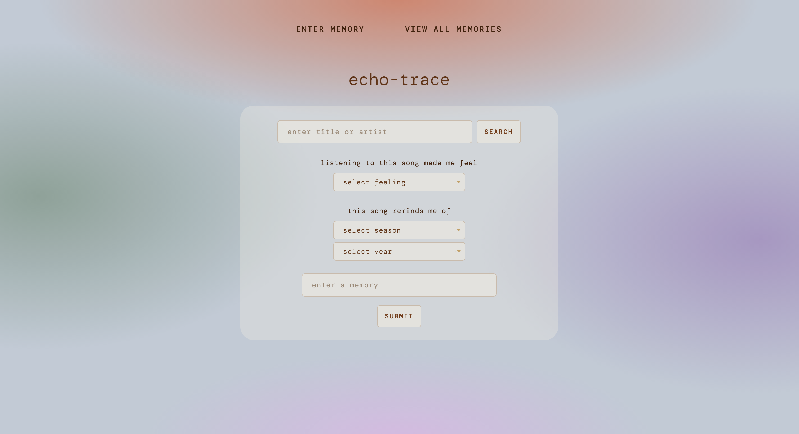
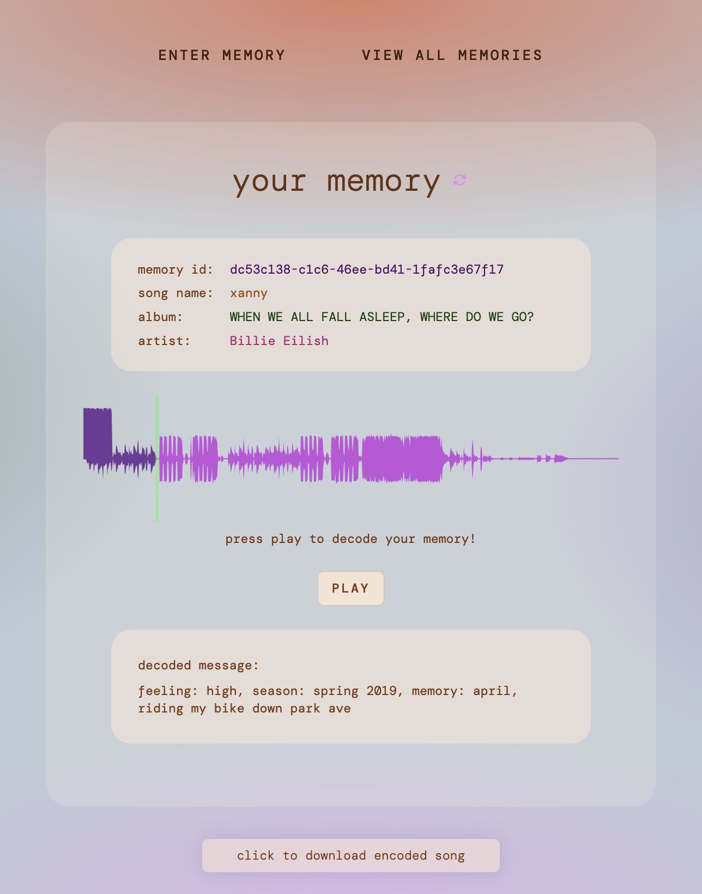

~ ECHOTRACE ~
EchoTrace is an audio steganography app that allows users to encode their memories into .wav files of their favorite songs.
This project was born from the idea that music can serve as a database for your memories. Music has the power to poignantly encapsulate memories and emotions in a way that not many other mediums can. When I'm listening to a song I'm often mentally transported back to the time/or memory that I most heavily associate with that song, even if that memory or emotion was not readily accessible to me prior to listening to the song. I wanted to create a tool that captures this essential part of the human experience, and allows users to actually embed their memories into their favorite songs to simulate the effect that listening to music has on the human brain.
What is Steganography?
Steganography is the art of hiding data in visible files (audio, text, images) making the data invisible to the person interfacing with the with the file. One of the most common forms of steganography is the Least Significant Bit (LSB) technique where data is recorded in the lowest bit of a byte.
Echotrace uses a form of 'broken' steganography to accomplish its goal of encoding memory data into .wav files. As mentioned above, the purpose of steganography is to completely conceal the message so that it is invisible to the user. When I first implemented the encoding logic for EchoTrace I encoded the users memory data into the least significant bit of every byte of the .wav file (or however many bytes necessary to completely encode the memory string). This completely concealed the message to the user, so when listening to their 'encoded' .wav file, there was no audible difference between the original .wav file--the song sounded exactly the same. Even though the encoding was working, it was an unsatisfying user experience because there was no way to verify that the app had actually been encoded in the .wav file. So, I decided to 'break' the steganography and start encoding the users data into the most significant bit in every byte (the first bit). This produces distortion to the encoded portions of audio that results in a buzzing sound, giving the user some indication that their songs .wav file had actually been manipulated to include their memory data.
How to use Echotrace
On the home screen the user can search for and select a song (using the Spotify Search API). From there the user can select an emotion, time period (season/year) and input a short memory that they associate with the song.

The user has the option to encode their memory into their song using audio steganography (explained below), then listen and watch as the encoded .wav file is decoded in real time.

After launching the initial version of this web app, I decided to add a feature where the user can choose to encode a 'secret message' or a 'spoken message'. If the user selectes 'secret message' the encoding logic will use the 'broken' steganography technique I described above. If they choose 'spoken message' the encoder uses ffmpeg text to speak to merge a .wav file with a spoken version of the users message into the songs original .wav file. I decided to add this feature because I found that people who weren't particularly interested in the technical specifities of audio steganography were having trouble using the web app, and I wanted everyone to get some enjoyment out of the site.
After the user has selected their chosen encoding method, they will then have the option to download their encoded .wav file, forever encapsulating their memory into their song.
Lastly, the website also features an 'explore page' where you can browse submissions from other users. All submissions are anonymous which I think gives the website a uniquely intimate look at what memories people associate with specific songs. You can query the database by the season, year, and/or emotion associated with each submission to essentially create a playlist based on time and mood from users.
Stack
Echotrace was built with a Typescript/React + Vite frontend and a Node.js/Express backend for the web component. The encoding and decoding logic is handled with a separate Python, Flask, and NumPy service that embeds extracts memory data by manipulating audio bits, intentionally producing an audio distortion. This was done to give myself experience working with Python/flask, and also due to the built in python methods for working with .wav files. The audio player is built with WaveSurfer.js for waveform visualization.
PostgreSQL with parameterized SQL queries and connection pooling stores memories, song metadata, and generated audio URLs.
The music produced from this site is sourced from Deezer Search API which provides a 30 second song sample that is then used to encode the users memories. Cloudflare R2 was used to store the encoded .wav files and serves them through public URLs. Uploading to R2 is handled by AWS S3.
For spoken memories Edge TTS generates narration and FFmpeg converts audio and layers the spoken memory into the .wav file.